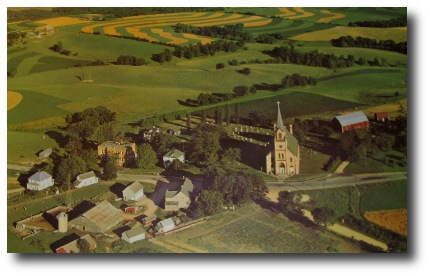

Our History
Our organic dairy farm, Breezy Acres Dairy, is a sixth-generation dairy farm in rural Cashton, WI, which has been proudly owned and operated by family for over 160 years. Our family farm started in 1863, with horse-drawn implements and the hand-milking of cows and has progressed through various stages of mechanical horsepower and the sciences of animal genetics, nutrition, health, quality cow care and modern crop production practices.
In 1993 we added a heifer barn and silo; in 1996 a feed room; in 1998 an earthen manure pit and rubber mattresses for the cows; transitioned to an organic dairy in 2000; in 2002 a new silo; in 2003 an addition to the house; in 2008 a new shed and shop were built; in 2012 an addition to the heifer barn; in 2016 installed a new 60 free-stall barn, and in 2017 we converted our barn into a swing parlor.
Today, we milk roughly 65 cows with a rolling-herd-average of over 21,000 pounds of milk annually. That means we produce and ship over one million pounds of milk to Westby Cooperative Creamery. We have been certified organic since 2000. These cows are milked twice daily in that same barn built back in 1903. We grow corn, alfalfa-hay and small grains on over 300 acres of land as feed for the cows. I also have an aunt and uncle who own a farm nearby. Together, we help each other with planting and harvesting and the sharing of equipment and knowledge – like any family would. It’s a very unique opportunity that we have been blessed with and allows us to remain close with our loved ones.
We especially enjoy visitors to Breezy Acres. In 2014, we were happy to host the annual Monroe County Dairy Breakfast, which was also our 150th year family farm celebration. We had over 3,000 people in attendance. Imagine having that many people to your home for breakfast. It’s a good thing that dairy farming teaches you how to plan, organize, manage time and details and to feed a herd! This means we’re ready for your visit as well. If you’re ever near Cashton, Wis. you’re welcome to stop in at Breezy Acres Dairy to share in the history and life of our family farm.
Farm Achievements
Where We Call Home
We are found in the Driftless region of Wisconsin, known as the coulee region. Our farm is located on St. Mary’s Ridge between two small communities; Cashton and Norwalk. This area has a strong community of farmers who care for each other and the land. Many farmers utilize contour strip cropping practices due to the hills and valleys of the area. The rich, heavy clay loam soil in our area is good for growing hay, grass, corn and other commodities.